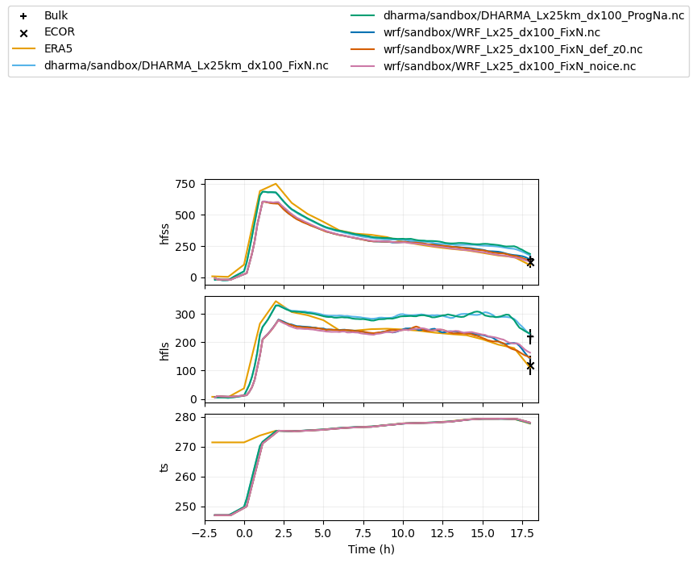

Evaluation of LES against satellite and ground-based observations#
The below notebook compares selected simulations against observational targets that were collected from satellite and ground-based retrievals.
In case of questions or concerns, please notify Ann Fridlind (ann.fridlind@nasa.gov), Timothy Juliano (tjuliano@ucar.edu), and Florian Tornow (ft2544@columbia.edu).
%run functions_plotting.py
## select simulations to plot
sim_keyword = 'dx100'
## load ERA5 fields
era5_1d, era5_2d = load_era5(PATH='../../data_files/')
## load radiosondes
rs_dat = load_rs(t_filter = 6.)
## load DOE ARM site statistics
kazrkollias_dat = load_kazrkollias(aux_dat=rs_dat) ## here using radiosonde profiles to estimate CTT
kazrclough_dat = load_kazrclough()
aeri_dat = load_aeri(t_filter = 0.5)
radflux_dat = load_radflux()
srfflux_dat = load_flux()
## load MAC-LWP
maclwp_dat = load_maclwp(t_filter = 0.)
gongiwp_dat = load_iwpgong(t_filter = 0.)
## load MODIS, VIIRS, and SENTINEL retrievals
modis_dat = load_modis(t_filter = 0.,sza_filter = 65.)
viirs_dat = load_viirs(t_filter = 0.,sza_filter = 65.)
sentinel_dat = load_sentinel(t_filter = 0.,sza_filter = 65.)
## load CERES retrievals
ceres_dat = load_ceres(t_filter = 0.)
## load CALIPSO retrievals (note the increased time window)
calipso_dat = load_calipso(t_filter = 3.)
../../data_files/theta_temp_rh_sh_uvw_sst_along_trajectory_era5ml_28h_end_2020-03-13-18.nc
../../data_files/anxsondewnpnM1.b1.20200313.232200.cdf
../../data_files/anxsondewnpnM1.b1.20200313.172600.cdf
../../data_files/anxsondewnpnM1.b1.20200313.112600.cdf
../../data_files/anxsondewnpnM1.b1.20200313.052700.cdf
KAZR (Kollias): here using auxiliary field to estimate cloud-top temperature
[169.96156 177.4911 162.12639 138.27472 167.64745 235.95657 257.107
259.92624 233.0567 225.21318 248.38287 293.48935 292.8031 282.6481
276.1281 297.78082 284.02722 279.7157 310.51205 320.97977 294.37558
292.64716 267.64267 238.54015 214.98909 201.34468 222.61674 215.51334
197.0588 215.42226 203.90613 189.37329 155.72173 165.03963 161.6677
151.27446 132.41727 155.86775 141.6555 147.2123 148.79279 159.79814
151.33041 152.06227 156.16455 167.56444 145.82355 156.90417 149.44048
168.9699 144.64796 157.97699 144.86409 135.78448 135.68465 159.00255
218.9959 198.0095 203.32779 209.35211 222.96 219.15211 239.44508
226.57698 227.505 208.16621 204.23465 217.04994 186.0305 170.50029
190.11252 225.20117 244.13144 215.6598 192.56625 197.31653 184.01158
174.82683 188.50743 219.03465 228.66966 248.39351 269.31934 289.65982
289.61084 298.9946 286.54593 321.00214 303.78687 187.3911 197.98515
221.4837 209.99481 196.69147 165.50435 144.29123 126.32116 120.1947
127.95244 142.03569 135.75545 123.58659 126.92 170.27567 162.12022
167.40163 188.49463 209.80783 210.40364 223.69058 211.60321 208.22816
217.70772 207.40083 205.8707 207.63104 200.5536 225.83461 204.13347
227.7524 270.13434 276.8646 269.18185 245.19902 230.46198 234.46683
233.85225 229.7463 214.71318 202.16028 234.82478 237.37927 217.89578
223.55199 225.25227 214.83192 246.36528 261.73468 211.90842 205.54547
184.33502 195.84105 214.33261 205.80853 179.65047 204.86763 172.36224
169.5353 186.64769 229.9188 230.65565 196.2564 199.67545 217.3727
195.92632 216.41515 192.01006 203.27197 207.45316 187.73744 200.04707
192.9092 175.48424 195.2939 201.0107 205.27646 177.62834 259.30307
312.54102 348.87088 324.86935 321.9758 321.2074 314.9346 313.2232
283.33105 285.58386 263.6363 259.74744 233.23662 220.81554 212.6215
201.55896 226.97816 220.19774 219.45021 215.7553 210.53665 245.79832
236.95761 232.38707 204.14917 185.48698 202.31252 203.36586 229.9415
303.74435 288.97858 277.92435 279.36185 267.4878 232.2831 241.83733
241.50609 244.15002 234.16206 225.64713 204.00899 200.27043 205.5323
219.9922 241.01312 203.1311 187.5443 195.23302 198.57402 209.52393
216.12897 205.93214 198.60803 259.17886 219.4193 260.6034 236.29778
250.33284 225.96867 256.93964 270.2902 244.41483 273.2472 253.87897
271.56598 284.18784 255.98929 239.86174 240.80656 236.53732 255.3988
243.43526 220.8579 217.88942 244.9089 269.28897 296.5968 296.01144
262.39963 266.32513 307.77393 324.7275 295.5322 297.5254 267.1043
286.6682 271.89496 275.97867 240.00235 261.5575 266.30374 253.42223
227.18903 244.25114 233.68828 235.87119 243.22565 232.3018 212.73935
176.06897 176.50742 168.28897 166.90393 171.02347 155.39812 147.2429
160.41287 151.49387 150.73938 158.78012 245.37799 264.57614 286.52835
289.3921 253.3305 210.30798 190.11595 198.46999 200.03285 215.82307
198.59882 226.37537 263.12115 212.08183 210.91098 229.97679 210.01505
219.57858 244.78398 241.6911 256.4546 253.61937 261.8289 257.2745
269.40454 254.15567 208.54233 243.07326 258.77948 224.04074 241.85347
218.20818 185.35811 235.34735 194.43526 249.01865 235.92015 196.67088
177.44106 178.88622 178.90652 245.00354 223.55273 221.88763 217.77689
212.6219 222.4206 220.32294 215.94919 182.4793 189.72214 223.74681
235.14877 238.11198 207.52576 267.66666 229.41183 244.97276 239.92351
236.02594 227.86308 206.45242 210.64658 218.30316 195.15599 195.14241
185.75636 175.77942 188.90695 185.73544 159.78746 150.07442 153.09563
171.71097 150.75912 144.21407 150.89409 148.64067 176.04848 178.89929
203.3575 248.61862 323.32556 281.44962 279.3029 269.66022 281.51978
250.31294 222.47444 216.54677 211.09317 212.81036 219.53094 196.94649
170.60585 182.9786 182.57544 211.91472 207.1732 217.21078 232.14775
226.21254 305.595 318.14404 312.7454 287.19156 320.6489 307.99725
274.27243 259.3632 265.0333 249.0782 215.16599 198.77797 167.19214
201.78334 198.0776 229.48978 251.07716 220.66924 203.70834 239.76492
218.90453 232.64055 252.31415 194.88167 196.95888 223.03822 215.53264
196.84361 213.4045 197.49599 217.63763 205.67375 211.90259 272.56586
293.12213 323.9216 301.03076 284.0661 233.51816 201.18553 204.06798
246.57056 232.56331 223.69028 197.4225 199.28773 210.59811 197.56621
189.27261 222.01025 220.93512 179.1153 191.22275 209.63165 183.68166
170.47641 186.16763 179.35591 182.86581 194.20712 131.7818 173.59892
198.2162 200.56691 194.21211 239.14362 232.65868 262.97424 234.8037
252.75688 265.21832 262.16034 252.47025 247.2176 219.28247 206.1379
199.95073 200.06577 178.97734 219.60677 204.87276 195.86194 200.35167
208.96004 189.9694 188.79114 182.2343 176.09828 158.16759 152.48242
191.06566 183.49446 183.1231 165.69572 209.02855 275.7759 289.6157
309.16248 289.73456 282.06644 250.9573 ]
/opt/conda/lib/python3.10/site-packages/numpy/lib/function_base.py:4691: UserWarning: Warning: 'partition' will ignore the 'mask' of the MaskedArray.
arr.partition(
/opt/conda/lib/python3.10/site-packages/numpy/lib/function_base.py:4691: UserWarning: Warning: 'partition' will ignore the 'mask' of the MaskedArray.
arr.partition(
/opt/conda/lib/python3.10/site-packages/numpy/lib/function_base.py:4691: UserWarning: Warning: 'partition' will ignore the 'mask' of the MaskedArray.
arr.partition(
/opt/conda/lib/python3.10/site-packages/numpy/lib/function_base.py:4691: UserWarning: Warning: 'partition' will ignore the 'mask' of the MaskedArray.
arr.partition(
/opt/conda/lib/python3.10/site-packages/numpy/lib/function_base.py:4691: UserWarning: Warning: 'partition' will ignore the 'mask' of the MaskedArray.
arr.partition(
/opt/conda/lib/python3.10/site-packages/numpy/lib/function_base.py:4691: UserWarning: Warning: 'partition' will ignore the 'mask' of the MaskedArray.
arr.partition(
/opt/conda/lib/python3.10/site-packages/numpy/lib/function_base.py:4691: UserWarning: Warning: 'partition' will ignore the 'mask' of the MaskedArray.
arr.partition(
/opt/conda/lib/python3.10/site-packages/numpy/lib/function_base.py:4691: UserWarning: Warning: 'partition' will ignore the 'mask' of the MaskedArray.
arr.partition(
## load all simulations located in subfolders of the given directory
var_vec_1d = ['hfss','hfls','ts'] # variables with ERA5 (longer time axis)
var_vec_2d = ['theta','qv','ua','va']
df_col_1d,df_col_2d = load_sims('../../output_les/',var_vec_1d,var_vec_2d,t_shift=-2,keyword=sim_keyword)
Loading variables: f(time)
../../output_les/dharma/sandbox/DHARMA_Lx25km_dx100_FixN.nc
../../output_les/dharma/sandbox/DHARMA_Lx25km_dx100_ProgNa.nc
../../output_les/wrf/sandbox/WRF_Lx25_dx100_FixN_noice.nc
../../output_les/wrf/sandbox/WRF_Lx25_dx100_FixN_def_z0.nc
../../output_les/wrf/sandbox/WRF_Lx25_dx100_FixN.nc
Loading variables: f(time,height)
../../output_les/dharma/sandbox/DHARMA_Lx25km_dx100_FixN.nc
../../output_les/dharma/sandbox/DHARMA_Lx25km_dx100_ProgNa.nc
../../output_les/wrf/sandbox/WRF_Lx25_dx100_FixN_noice.nc
../../output_les/wrf/sandbox/WRF_Lx25_dx100_FixN_def_z0.nc
../../output_les/wrf/sandbox/WRF_Lx25_dx100_FixN.nc
## plot variables that have only time dependence
plot_1d(pd.concat([df_col_1d,era5_1d,srfflux_dat]),var_vec_1d)

## load all simulations located in subfolders of the given directory
var_vec_1d = ['lwp','iwp','od'] # variables without ERA5 (shorter time axis)
var_vec_2d = ['theta','qv','ua','va','ta']
df_col_1d,df_col_2d = load_sims('../../output_les/',var_vec_1d,var_vec_2d,t_shift=-2,keyword=sim_keyword,diag_zi_ctt=True)
Loading variables: f(time)
../../output_les/dharma/sandbox/DHARMA_Lx25km_dx100_FixN.nc
lwp not found in ../../output_les/dharma/sandbox/DHARMA_Lx25km_dx100_FixN.nc
../../output_les/dharma/sandbox/DHARMA_Lx25km_dx100_ProgNa.nc
lwp not found in ../../output_les/dharma/sandbox/DHARMA_Lx25km_dx100_ProgNa.nc
../../output_les/wrf/sandbox/WRF_Lx25_dx100_FixN_noice.nc
../../output_les/wrf/sandbox/WRF_Lx25_dx100_FixN_def_z0.nc
../../output_les/wrf/sandbox/WRF_Lx25_dx100_FixN.nc
Loading variables: f(time,height)
../../output_les/dharma/sandbox/DHARMA_Lx25km_dx100_FixN.nc
../../output_les/dharma/sandbox/DHARMA_Lx25km_dx100_ProgNa.nc
../../output_les/wrf/sandbox/WRF_Lx25_dx100_FixN_noice.nc
../../output_les/wrf/sandbox/WRF_Lx25_dx100_FixN_def_z0.nc
../../output_les/wrf/sandbox/WRF_Lx25_dx100_FixN.nc
computing inversion height and cloud-top temperature
## plot variables that have only time dependence
#plot_1d(pd.concat([df_col_1d,maclwp_dat,modis_dat,viirs_dat,sentinel_dat,kazrkollias_dat,kazrclough_dat,calipso_dat,radflux_dat]),['zi','od','lwp','iwp','ctt'])
plot_1d(pd.concat([df_col_1d,maclwp_dat,kazrkollias_dat,kazrclough_dat,calipso_dat,radflux_dat]),['zi','od','lwp','iwp','ctt'])
## plot variables that have only time dependence (for now excluding imager retrievals that are mostly SZA > 70)
#plot_1d(pd.concat([df_col_1d,maclwp_dat,kazrkollias_dat,kazrclough_dat,calipso_dat,gongiwp_dat,radflux_dat]),['od','lwp','iwp']) #'zi','od','lwp','iwp
/opt/conda/lib/python3.10/site-packages/matplotlib/axes/_axes.py:1185: RuntimeWarning: All-NaN axis encountered
miny = np.nanmin(masked_verts[..., 1])
/opt/conda/lib/python3.10/site-packages/matplotlib/axes/_axes.py:1186: RuntimeWarning: All-NaN axis encountered
maxy = np.nanmax(masked_verts[..., 1])
## plot all variables that have time and height dependence
#plot_2d(df_col_2d,var_vec_2d,[0,3,6,9,12,15,18],z_max=6000)
## example where ERA5 and radiosonde are included
plot_2d(pd.concat([df_col_2d,era5_2d,rs_dat,aeri_dat]),var_vec = ['ta','theta','qv','ws','wd'],times=[-1.5,0,4,8,18],z_max=6000)
Computing wind speed
Computing wind direction
<Figure size 1000x600 with 0 Axes>